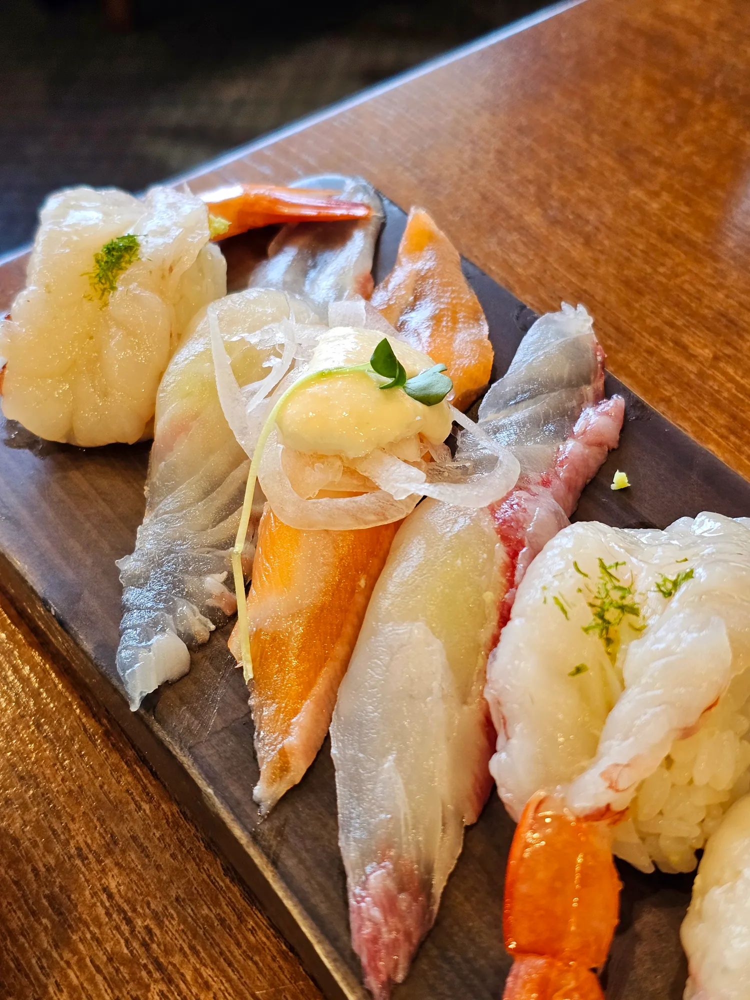
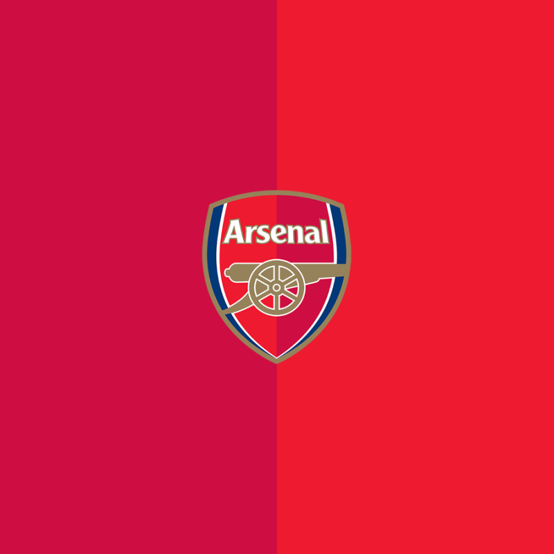
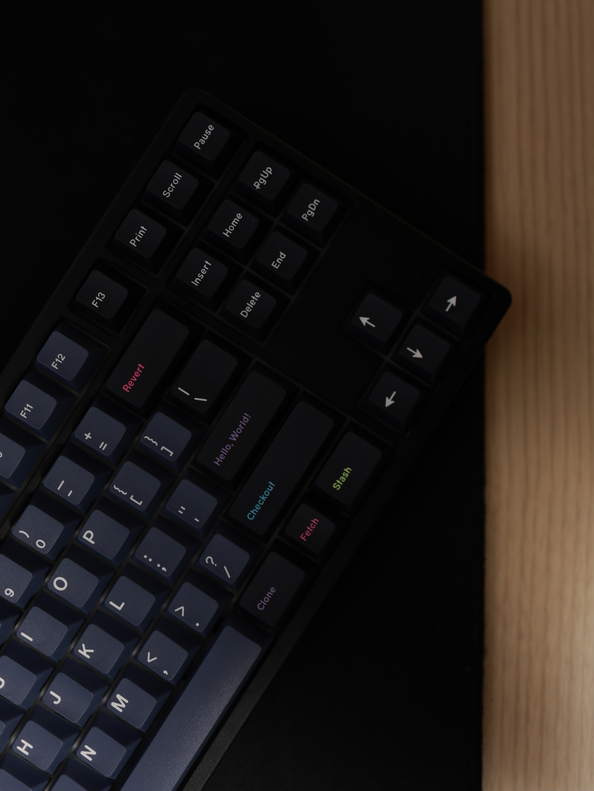
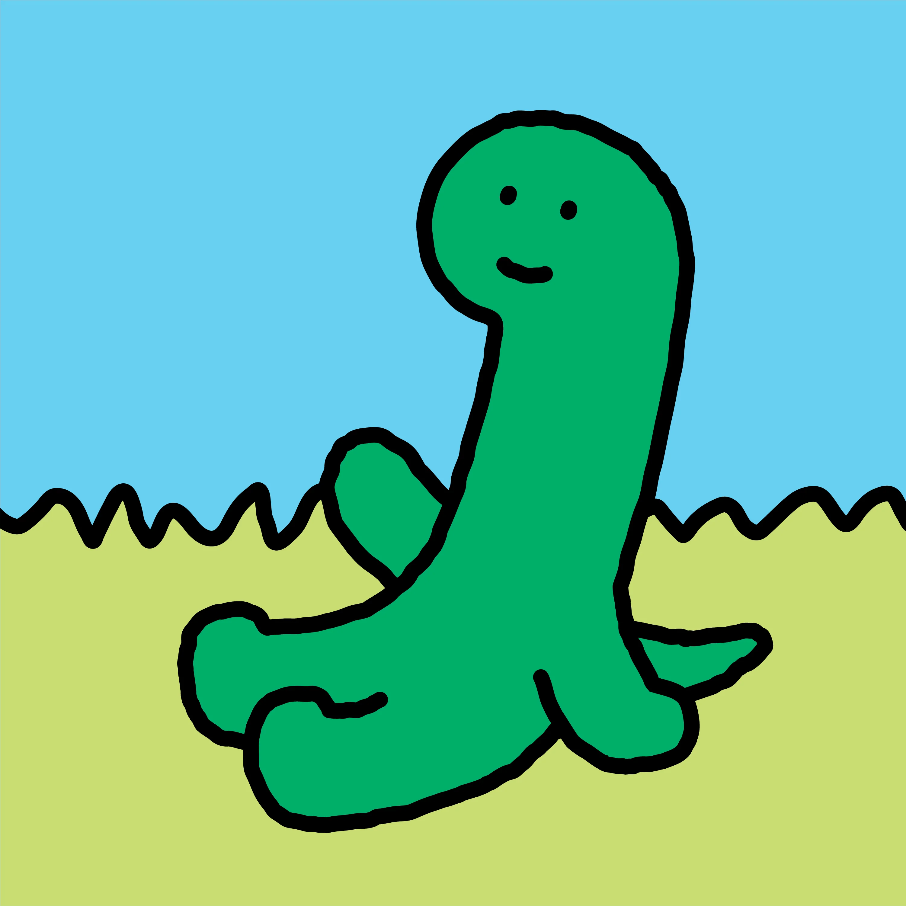
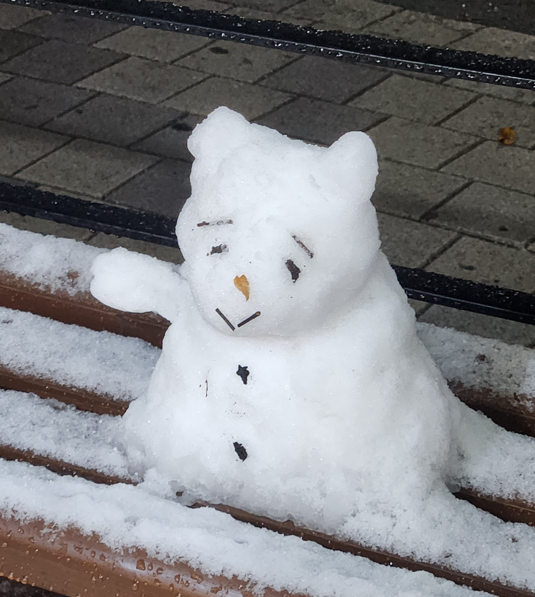

엄마를 만나러 가는 길 (웹툰)
한 번 울었어요
제목과 달리 외계인 나오는 SF 웹툰입니다.
주인공이 매우매우 귀엽습니다.
FE 8기
안녕하세요 !! 프론트엔드 8기 윤돌입니다.
github| 이름 | 정윤석 |
|---|---|
| MBTI | ISFP |
| 취미 | 영화, 음악, 사진, 여행, 고양이 구경하기 |
| 좋아하는 음식 | 피자, 초밥, 돈까스 |
내가 좋아하는 것들






한 번 울었어요
제목과 달리 외계인 나오는 SF 웹툰입니다.
주인공이 매우매우 귀엽습니다.
두 번 울었어요
도트 그래픽 기반 횡스크롤 액션 게임입니다.
스토리가 너무 슬퍼요..
오늘 새롭게 배운 것들을 기록합니다.
header, nav, main, section, article, footer 등 시멘틱 태그의 역할과 사용법을 배웠다.